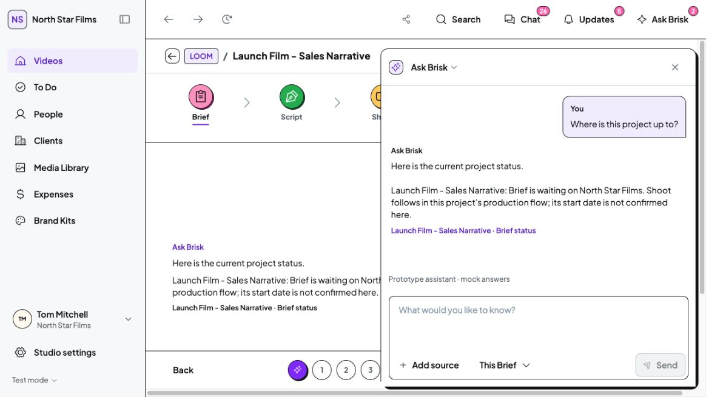
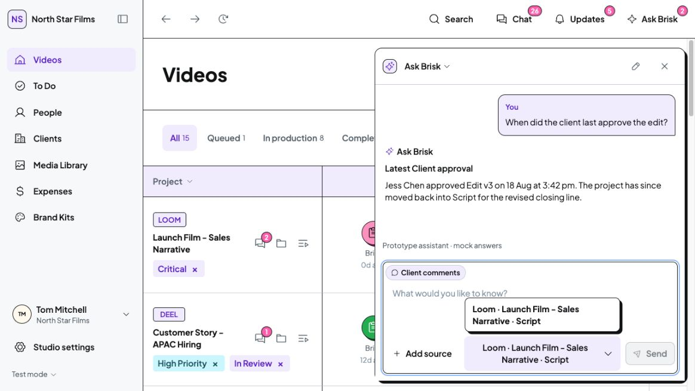

The opening contains the question input and its controls. The conversation appears after you ask.
Answers and context
Answers expand in the same panel. Drafts and sources survive the checked close/reopen and navigation path. The integrated context menu keeps existing scope choices; older conversations show the full project/Stage name. History and Your briefing remain in the header menu.

Read-only project-status answer and source link in the existing shared Brief conversation.
Earlier conversation viewed from Videos. The context names Loom and Script.TypeScript, HTTP 200 and diff checks passed. Desktop interaction checks used an isolated local origin. Your working data, application assets and dependencies were unchanged. No real messages were sent. Mock answers and existing drafting/permission rules remain.
Native visual checks used 1164px desktop width. A 1440px emulated DOM geometry check passed, but its tiled screenshot was rejected as unusable evidence. No mobile pass, tests, production build, commit or push.